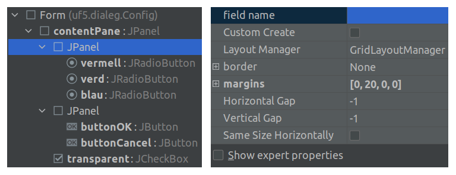
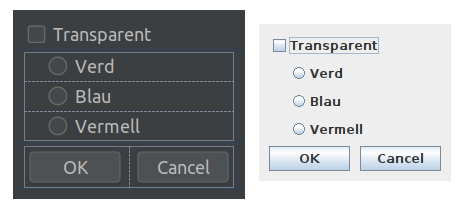
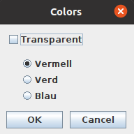

Els diàlegs simples que s'han vist anteriorment tenen les seves limitacions: si s'han d'introduir moltes dades o permetre que l'usuari pugui triar entre diferents opcions, no serveixen.
La classe JDialog pot servir per crear-los manualment, però distribuir els elements pot ser complicat.
Normalment, la millor opció és utilitzar el dissenyador de l'IDE (també serveixen per dissenyar finestres).
Per dissenyar un diàleg amb IntelliJ, cal clicar el botó secundari a sobre d'un package i seleccionar New → Swing UI Designer → Create Dialog Class.
Demanarà el nom de la classe i crearà un arxiu .java i un .form.
En el primer apareixerà el codi del diàleg i en el segon un formulari gràfic.
Es poden afegir elements arrossegant-los dins de l'esquema del diàleg o dins de mateix diàleg.
Seleccionant qualsevol component, es poden modificar els seus atributs:
També es poden veur més propietats marcant la casella Show expert properties.
De totes formes, algunes propietats s'hauran de configurar modificant el codi.

Els dissenyadors dels IDEs solen tenir una opció (Preview) per veure com quedaria.

Serveix per fer que només un dels botons del grup pugui estar premut.
Es pot fer editant el codi però també des de l'editor.
A la vegada que es van realitzant accions en el dissenyador gràfic, es va modificant el codi de la classe.
Un cop acabat el disseny gràfic, sempre caldrà fer algunses modificacions i afegits al codi, però s'ha de vigilar de no canviar els noms dels atributs: aquests sempre s'han de modificar en el dissenyador.
En el codi de la classe hi haurà:
setTitle("Colors IDE");
setResizable(false);
transparent.addActionListener(new ActionListener() {
@Override
public void actionPerformed(ActionEvent e) {
boolean enabled = !((JCheckBox)e.getSource()).isSelected();
// Activar o desactivar els botons de ràdio
vermell.setEnabled(enabled);
verd.setEnabled(enabled);
blau.setEnabled(enabled);
}
});
private void onOK() {
// Guardar el valor seleccionat
if (transparent.isSelected()) resposta = "Transparent";
else if (vermell.isSelected()) resposta = "Vermell";
else if (verd.isSelected()) resposta = "Verd";
else resposta = "Blau";
dispose();
}
private void onCancel() {
resposta = null;
dispose();
}
public String getResposta() {
return resposta;
}
En un diàleg més complicat es poden crear mètodes per cada valor o un objecte que els contigui tots.
També es pot afegir un mètode per inicialitzar les dades del diàleg abans de mostrar-lo.
També es crea automàticament aquesta funció per fer proves amb el funcionament del diàleg.
Per no haver de crear el diàleg cada vegada, es pot utilitzar un atribut global.
Config triarColors = new Config();
Després, quan s'hagi de mostrar:
triarColors.setVisible(true); // Mostra el diàleg i espera
String resposta = triarColors.getResposta(); // Obté la resposta
if (resposta != null) System.out.println(resposta);
else System.out.println("No s'ha seleccionat res!");
